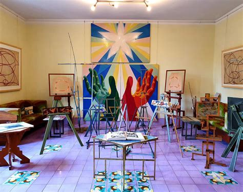

Casa Balla.
Dalla casa all'universo e ritorno. La mostra al MAXXI di Roma fino al 21 novembre.
Lo sviluppo di questo sito web nasce dalla realizzazione di un progetto di esame, durante il corso di Digital Humanities e Patrimonio Culturale a.a. 2020/21 presso l’Università di Bologna. Il sito ospita collezioni di diversi oggetti artistici e culturali, afferenti ai campi della pittura, scultura, architettura, letteratura, musica, moda e tutti correlati all’ambito futurista. Il fulcro di questa ricerca è infatti quello di creare un ambiente nel quale le diverse voci raccolte attorno a tale fenomeno storico possano essere facilmente collegate ed esplorate, rendendo così maggiormente evidenti ed esplicite le relazioni da cui sono connotate.
La scelta del futurismo come materia di studio per questo progetto è da ricondurre principalmente a due motivi. Innanzitutto, si tratta di un movimento che, come propria impostazione, si propone di esplorare il campo delle arti a 360°, e anzi di superarne i confini. Strabordandone al di fuori, vuole impadronirsi sulla scia di un afflato prepotentemente vitalistico di ogni ambito della quotidianità. L’argomento in sé appare dunque particolarmente adatto allo studio dei modi e dei risultati dell’applicazione di un metodo che è di per sé innovativo, come quello delle DH. Questo, per il suo modo di essere, implica una matrice di analisi già differente, più transdisciplinare e più attenta al livello semantico dell’intera ricerca. In secondo luogo, il futurismo è sembrato un tema particolarmente adatto in quanto estremamente controverso. Il suo appartenere a un periodo storico così tragico come quello dei primi decenni del Novecento in Italia, le prese di posizione pro-belliche dei suoi membri, nonché gli innegabili punti di contatto con alcune ideologie cavalcate anche dalla compagine fascista, rendono la discussione e lo studio di questo tema sempre estremamente complessi e mai scontati. La creazione di un luogo virtuale nel quale, grazie alle diverse collezioni meta-datate disponibili, le informazioni possano essere più agilmente incrociate, reperite e sistematizzate, mira a rendere più fecondo, semplice e chiaro lo studio di queste risorse. È importante evidenziare che in nessun modo si vuole sminuire la necessità dello studioso di trattare in modo complesso, completo e critico l’approccio a una materia così controversa.
Dalla casa all'universo e ritorno. La mostra al MAXXI di Roma fino al 21 novembre.
La sua riapertura presso il Museo del Novecento di Milano in un articolo di Artribune.
Il libro di Mattia Rossi sulla musica futurista. Ed. Solfanelli.